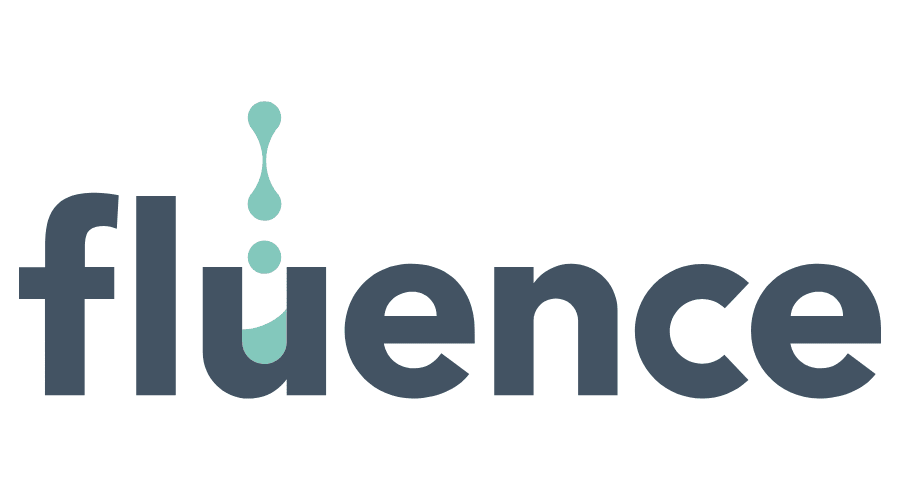

2018｜Frost & Sullivan 年度公司獎
獲 Frost & Sullivan 全球分散式水與廢水處理年度公司獎。
原廠得獎公告 ↗
OUR REPRESENTED BRAND
Fluence 於 2017 年由 Emefcy 與 RWL Water 整合成立，總部位於美國明尼蘇達州，服務涵蓋水處理、廢水處理與水回用。旗下 MABR 技術透過膜供氧支持生物處理，應用於 Aspiral 模組化系統與 SUBRE 污水廠升級方案。
獲 Frost & Sullivan 全球分散式水與廢水處理年度公司獎。
原廠得獎公告 ↗原廠 2023 年資料記載，Sihanoukville 的 PS1、PS2 污水廠採用 SUBRE，處理逾 10 萬人口的市政污水。
原廠實績簡報，第 32 頁 ↗